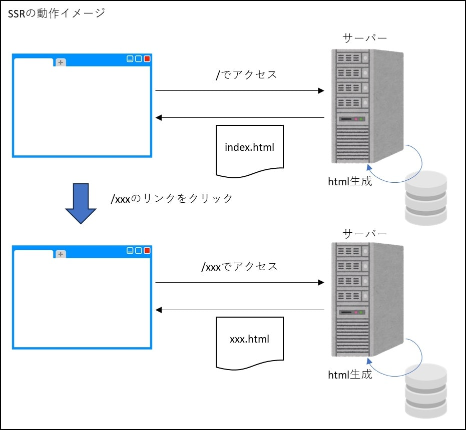
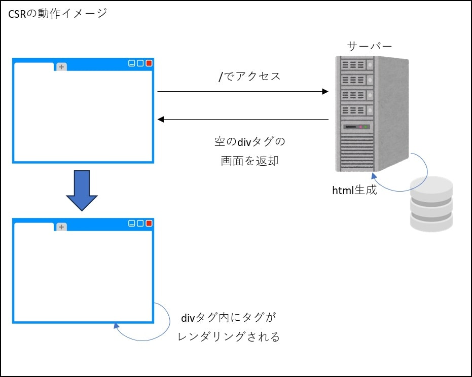
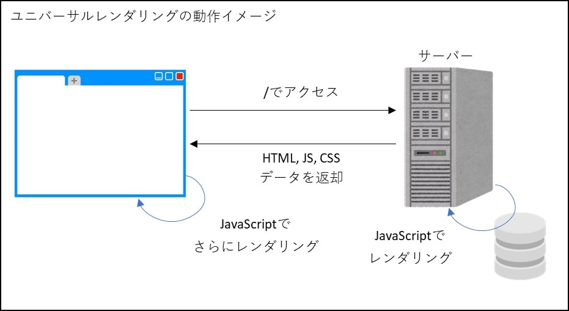
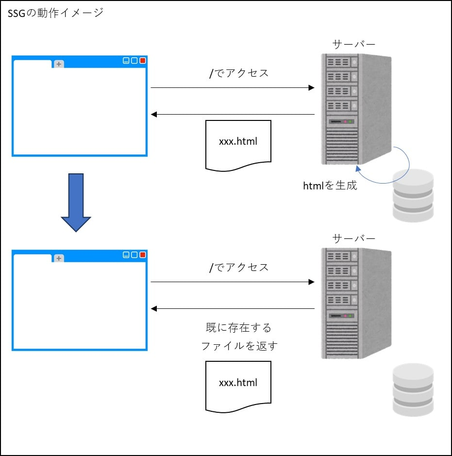
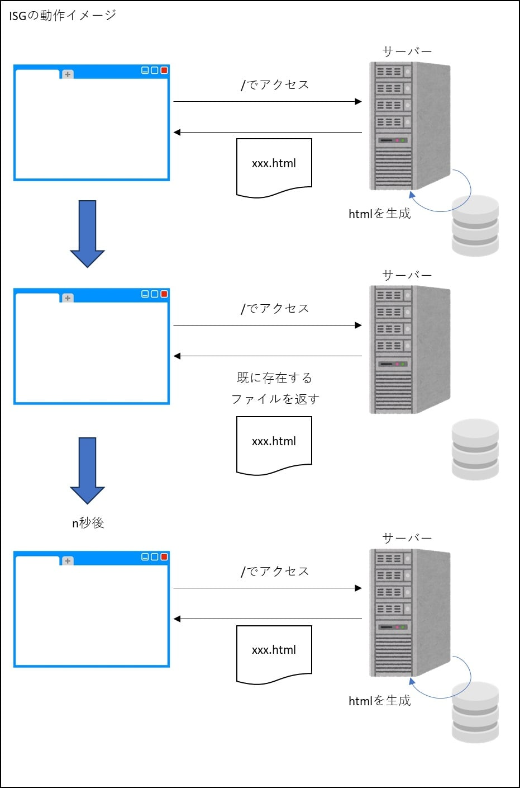

Nuxt3のレンダリング
はじめに
このページは、NextとNuxtのレンダリング手法の続きです。一応このページから読んでも分かるように構成したつもりですが、SPAがよくわかっていない場合はこちらから見た方が良いかもしれません。
2025年1月16日時点でのNuxtの最新バージョンは v3.15.2 です。
Nuxtは2と3で変更部分が多く、Nuxt4へのアップデートも予定されているため、どのバージョンについて調べているのか注意が必要です。
Nuxt3のレンダリング手法
以下が、Nuxt3で選択できるレンダリング手法です。
Nuxt2まではアプリケーション全体のレンダリングしか指定できなかったのですが、Nuxt3ではページ毎にレンダリングモードの選択が可能になっています。
SSR(Server-Side Rendering)
JavaやPHPなどのいわゆるサーバーサイドWebアプリケーションと同じ。
サーバー側でレンダリングが行われ、生成されたHTMLデータが送信される。ブラウザは、単に送信されたHTMLデータを表示するだけ。
これがSSR(Server-Side Rendering)

CSR(Client-Side Rendering)
クライアント側でレンダリングの全てを行い、実際に表示に必要な画面を用意する仕組みがCSR(Client-Side Rendering)。
全ての画面がCSRで構成されたアプリケーションのことをSPA(Single Page Application)という。

Universal Rendering
Nuxt3のデフォルト。
アプリのユーザーと相互のやり取りが必要な処理など、どうしてもクライアントサイドで動作しないと成り立たない処理内容に関しては、その処理をサーバーサイドで行わず、JavaScriptコードをブラウザに返すことで、ブラウザ上でも動作させるように自動的に制御する仕組み。
このSSRとCSRのいいとこ取りがユニバーサルレンダリング(Universal Rendering)。

SSG(Static Site Generation)
初回アクセス時は対応するhtmlファイルをサーバ側で生成し、ブラウザに返します。次にアクセスしてきた場合は、すでに生成されたhtmlファイルを返却します。
一度生成したファイルを何らかの方法で削除したり、強制的に再生成しない限りは、永遠に同じ内容のファイルが返されます。
そのため、例えば現在時刻を表示するようにしていたとしても、htmlファイルが生成された時刻で固定され、何回リロードしても表示時刻は変化しません。
これを静的サイトジェネレーション(Static Site Generation)と言います。

ISG(Incremental Static Generation)
SSG(Static Site Generation)とほぼ同じですが、n秒後（nはアプリケーションで指定）にアクセスすると再度サーバ側でhtmlファイルを生成し、それがクライアントに返却されます。
これをインクリメンタル静的ジェネレーション(Incremental Static Generation)と言います。

各レンダリングの実装方法
Nuxt3では、nuxt.config.ts に "パス": {レンダリングモード} の形式でページ毎のレンダリング方法を記述することでレンダリング方法を制御します。具体的には以下。
nuxt.config.tsexport default defineNuxtConfig({
devtools: { enabled: true },
routeRules: {
"/spa": {ssr: false},
"/ssg": {prerender: true},
"/isg": {swr: 30},
}
})
レンダリングモードは以下のように指定します。
全量は公式サイト参照。
| レンダリングモード | nuxt.config.tsの記述 |
|---|---|
| CSR(Client-Side Rendering) | ssr: false |
| SSR(Server-Side Rendering) | ssr: true（デフォルトなので記述不要） |
| Universal Rendering | |
| SSG(Static Site Generation) | prerender: true |
| ISG(Incremental Static Generation) | swr: [数値] 数値で指定した秒数毎に再レンダリング |
ssr: true（または記述無し）とすると、サーバーサイドでレンダリングした後、どうしてもクライアントサイドで動作しないと成り立たない処理（アプリのユーザと相互のやり取りが必要な処理など）に関しては、クライアントサイドでレンダリングを行います。
参考書籍
参考サイト